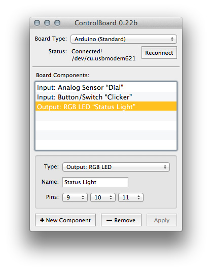
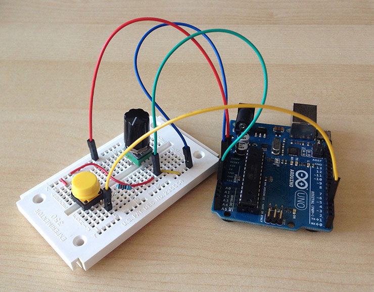
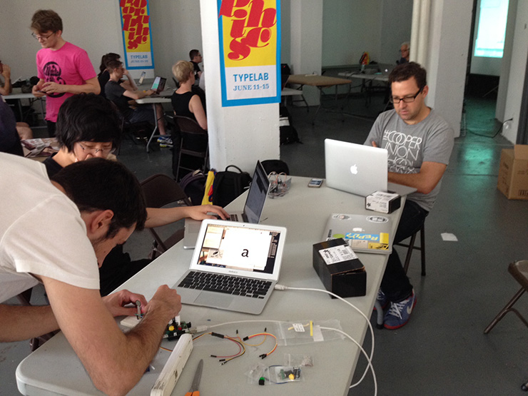
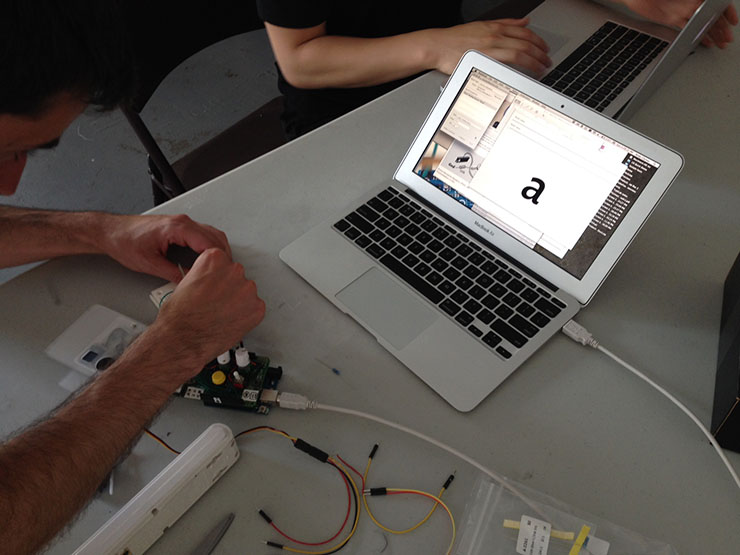
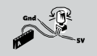
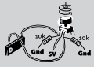
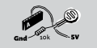
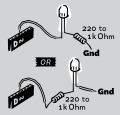

Control Board

Tech wizard @andyclymer controlling type with physical hardware in the #TypeLab at #Typographics pic.twitter.com/QSz0e8P5Dk
— Typographics (@TypographicsNYC) June 14, 2015Control Board is a Python extension that lets you add physical controls to the RoboFont editor.
Using an Arduino-compatible board and a few basic circuit components, you can turn physical input (such as the pressing of buttons, toggling of switches, turning of knobs) to an action in a Python script (setting an interpolation value with a sensor, toggling a checkbox), or your script can change the state of output-style components (blinking a light to give an alert, moving a motor).

An Arduino Uno board (right) connected to a basic circuit consisting of a button and a potentiometer.Control Board was written by Andy Clymer for a presentation at Robothon 2015. The extension along with code examples can be downloaded from the Control Board repo on Github.
A demo and a small hacking session occurred at the Typographics TypeLab



Building a circuit in the TypeLabBasic Circuits

Button
The Digital Input pins on an Arduino will register as being “High” or “On” when power is applied, and will register as “Low” or “Off” when they are instead connected to ground.
Connect one leg of the button to the 5 volt supply of power. The second leg of the button will need to be connected to your choice of Digital input pins and also connected to a resistor which is connected to ground. A wide range of resistor values will do, anything between about a 1k Ohm or 10k Ohm resistor will be fine.
When the button up and is not being pressed a circuit will be made between the Digital pin on the Arduino and the Ground, by way of the resistor. This will give the Arduino the signal that this pin is “Low” or that the button is not being pressed. However, when the button is pressed, power will flow from the 5 Volt connection to the Digital pin, bypassing the resistor, since power wants to flow with the path of least resistance. This will give the Arduino the signal that a change has happened on this input pin.
Note that you must use a resistor for your connection between the pin and ground, without a resistor a button press will connect the full 5 volts of power directly to the ground which will cause a short circuit.

Switch
Switches come in many forms, the most common type of switch that you would want to use with a Control Board project would be a “Single Pole, Single Throw” (SPST) which means that the switch is toggling on like a button being held down and off like a button being released, or a “Single Pole, Double Throw” (SPDT) switch that turns one connection on when the switch is toggled to one side and turns another connection on when the switch is toggled to the other side.
The SPST style switch will have two legs and should be connected identically to the Button example, with one leg connected directly to 5 volts of power and the other leg connected to two places: to Ground by way of a resistor and also to a Digital input pin.
The SPDT switches will have a third leg. The middle leg is the “common” leg that both sides of the switch use and is the pin that you should connect to 5 volts of power. Treat the other two legs as their own connections to a digital pin and to Ground by way of a resistor, just as in the Button example.

Potentiometer
A Potentiometer is a variable resistor, and commonly only turns about three quarters of the way around. Think of it like a volume knob on your stereo: on one end the power resistance would be at its maximum which wouldn't let any power through, and on the other end resistance will be at its minimum letting power through full blast.
Potentiometers come in many shapes and sizes and resistance levels. For our purposes, try to find a potentiometer with a value somewhere from 10k Ohms to 100k Ohms. You would ideally use a potentiometer that follows a linear curve (i.e. the half way point on the knob is going to be exactly 50% of the resistance), the names of linear potentiometers will start with B, such as “B10k” or “B100k”.
You will find three legs on a potentiometer, and the easiest way to wire one up is as a “voltage divider” where the leg on one far end will be connected to the full 5 volts of power, the leg on the other far end will be connect to zero volts or the Ground, and the leg in the middle will be connected to an Analog Input pin on the Arduino. The middle pin will be outputting a voltage that is somewhere between 5 volts on one end and 0 volts on the other end, depending on the position of the knob.

Rotary Encoder
A Rotary Encoder is the kind of control that spins freely in both directions. Unlike with a Potentiometer you're unable to determine where the control is pointing, instead you only get a signal that the control is being turned clockwise or counter-clockwise. Whereas a potentiometer is handy to use for something like an interpolation value that would be between 0 and 1, a Rotary Encoder is useful for things like stepping forward/backward through a list of glyphs one step at a time.
It will have at least three legs on one side which will be used to determine the direction that the control is moving, and it will often have two more legs on the other side which are connected to a button that can be activated by pressing down on the knob.
Treat the side with the three legs like two buttons who share a common 5 volt connection to the center leg, and where each outside leg is connected both to a Digital input pin and by way of a resistor to Ground. As the encoder is turned, the Arduino will get an alternating signal from these two pins that it will use to determine which direction the encoder is being turned.
If desired, connect the two pins on the other side of the encoder in the same way that you would connect a button.

Force Sensitive Resistor (FSR), or
Photoresistor (LDR)
A variety of resistive sensors could be connected to the Arduino by wiring them up in a way that's known as a Voltage Divider. Two interesting sensors to try are a Force Sensitive Resistor (FSR) which will give you a varying value depending on how hard the sensor is pressed, and a Photoresistor or Light-Dependent Resistor, which will give you a range of values depending on the amount of light that hits it.
Connect one leg of the sensor to your 5 volt supply, and the other leg of the resistor to an Analog pin on the Arduino and also to ground by way of a 10k resistor.

Light Emitting Diode (LED)
A Light Emitting Diode will have two legs: the longer one is known as the “Anode” or the positive leg, and the shorter leg is the “Cathode” or the negative leg. The longer leg should be connected to a Digital Output pin, and the shorter leg should be connected to Ground.
A resistor will be required to reduce the amount of power going to the LED to keep it from burning out. For most LEDs, something in the range of 220 Ohm to 1k Ohm should be okay, the higher the value the darker the LED will be. You can place the resistor on either leg: between the Anode and the Digital pin or between the Cathode and the Ground, as long as you use one.
If you choose a Digital pin that has either the letters “PWM” or a Tilde “~” next to the pin number, then you will be able to vary the brightness of the LED in code. Otherwise, the led will only be able to be turned on to 100% or off.

Full color RGB LED
An RGB LED is three LEDs in one, one Red, one Green, one Blue. Each color will have its own leg and all three will share the fourth leg. RGB LEDs come in two styles: “Common Cathode” where the shared pin is the negative Cathode pin, or “Common Anode” where the shared pin is the positive Anode. It's most common to use the Common Cathode style, which is shown in this example.
The longest pin is the common pin, which should be connected to Ground. The other three pins should be connected to Digital Output pins on the Arduino by way of a resistor. You can start by using the same resistor value for all three colors but since each color LED behaves differently you will have to do some work to get the correct resistor values if you want anything close to calibrated shades of color (so don't have high hopes for perfect Glyph Mark colors right out of the box).